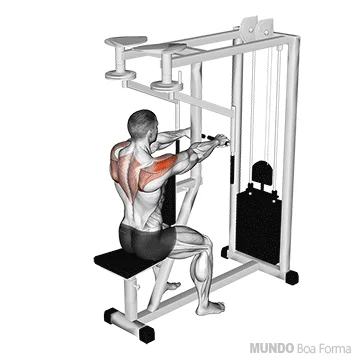

Bíceps 9 Séries
Ele auxilia o músculo braquial para realizar a flexão do cotovelo. Curiosamente, ele tem papel secundário nessa função de flexão, sendo o músculo braquial o principal flexor do cotovelo. A sua outra função é a de supinação, que é a rotação do antebraço (movimento de colocar a palma da mão para cima).O bíceps tem duas cabeças, a cabeça curta e a cabeça longa

ROSCA BICEPS NO BANCO SCOTT
(12-10-8)
Os principais músculos recrutados na rosca scott na máquina são: Bíceps braquial. Braquial. Braquiorradial.

ROSCA DIRETA PEGADA ABERTA
(12-10-8)
Os principais músculos recrutados na rosca scott na máquina são: Bíceps braquial. Braquial. Braquiorradial.

ROSCA CONCENTRADA UNILATERAL COM halter
(12-10-8)
A rosca bíceps concentrada unilateral com halter é um exercício de isolamento para o bíceps capaz de levar à hipertrofia muscular.
Costas / Largura
9 séries

Músculos extrínsecos superficiais do dorso: músculos trapézio, latíssimo do dorso, romboide maior, romboide menor e levantador da escápula. Músculos extrínsecos intermediários do dorso: músculos serrátil posterior superior e serrátil posterior inferior.

PUXADA COM BARRA FRENTE ABERTA PEGADA PRONADA
(14-12-10)
Este exercício trabalha vários músculos das costas, como o latíssimo do dorso, a região média das costas, os bíceps e os ombros, ele é classificado como um movimento de fortalecimento, sendo também indicado para iniciantes.
Como fazer:
1. Primeiro, sente-se em uma máquina pulley, e ajuste o equipamento conforme a sua altura;
2.Em seguida, segure a barra com uma pegada aberta, em uma distância maior que a largura dos ombros, com as mãos direcionadas para fora (Pronada). Uma outra forma de executar o exercícios é segurar a barra na mesma largura dos ombros.
3.Depois, com os braços estendidos na sua frente, leve o tronco para trás formando um ângulo em torno de 30º, ao mesmo tempo em que cria uma leve curvatura na região lombar e estufa o peito.
4.Então, exale o ar e traga a barra para baixo, até que ela toque a parte superior do peito. Ao atingir a posição de contração total, comprima os músculos das costas.
5.Lembre-se que o tronco deve ficar imóvel e somente os braços devem se mexer. O único esforço feito pelos antebraços é o de segurar a barra.
6.Depois, segure a posição contraída por um segundo, comprimindo as escápulas;
7.Então, levante a barra lentamente à posição inicial, inalando o ar, até que os braços estejam totalmente estendidos e o latíssimo do dorso completamente alongado.

PUXADA FECHADA/INVERTIDA PEGADA PRONADA/SUPINADA
(14-12-10)
A puxada frontal supinada, também conhecida como puxada fechada ou invertida, trabalha principalmente os músculos do grande dorsal e do bíceps. A puxada com pegada supinada é feita com a pegada invertida, segurando-se uma barra reta com as palmas das mãos voltadas para o corpo e na largura dos ombros
PUXADA PULLEY FRENTE PEGADA NEUTRA RETO 50°
(14-12-10)
Trabalha varios musculos sendo eles o latíssimo do dorso, rombóides, trapézio deltoíde posterior e bíceps.
Costas / Espessura
9 Séries

FLY INVERSO NA MAQUINA
(14-12-10)
O voador inverso é um exercício que trabalha os músculos das costas (rombóides e trapézios) e dos ombros (deltoides superiores)

REMADA MAQUINA COM CABO PUXADA BAIXA
(14-12-10)
Remada baixa é considerado um dos melhores exercícios para trabalhar costas. Quando se faz remada baixa, a pessoa trabalha diversos músculos, mas principalmente o latíssimo do dorso e o trapézio, nas porções inferior e superior.
REMADA MÁQUINA COM APOIO PEGADA SUPINADA
(14-12-10)
Conhecida como um dos melhores exercícios para melhorar a força das costas, a remada também ajuda a combater a má postura, colocando o ombro de volta em uma posição neutra. Outra vantagem é que ela possui muitas variações, então você pode modificar o exercício para atingir diferentes áreas que, no caso, é supinada